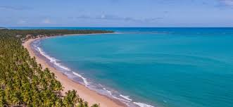

As ferias estão chegando
A história de Itapema, uma cidade litorânea de Santa Catarina, começa com os povos indígenas, especialmente os Tupiniquins, que habitavam a região. Seu nome, de origem tupi-guarani, significa "pedra que brilha", inspirado nas pedras ao longo da costa.Colonizada por portugueses e açorianos no século XVIII, a cidade se desenvolveu com a pesca e agricultura. Em 1962, Itapema se tornou um município independente, e nas décadas seguintes, começou a ser descoberta como um destino turístico, graças às suas belas praias. Com o passar dos anos, Itapema cresceu e se transformou em um importante ponto turístico de Santa Catarina, atraindo visitantes pelas suas praias e pela infraestrutura desenvolvida. Hoje, é conhecida por praias como Meia Praia e continua a crescer, equilibrando turismo e preservação ambien
Mehor investimento
.jpeg)
O Bitcoin surgiu em 2008, criado por uma pessoa ou grupo sob o nome Satoshi Nakamoto, com o objetivo de criar uma moeda digital que funcionasse sem intermediários, como bancos. Sua base é a tecnologia blockchain, que registra as transações de forma pública e segura. A primeira moeda foi minerada em 2009, e nos primeiros anos, o Bitcoin era pouco conhecido. A partir de 2013, o interesse cresceu à medida que o valor da moeda disparou, ultrapassando 1.000 dólares. No entanto, desafios surgiram, como a falência da exchange Mt. Gox em 2014, que levantou preocupações sobre a segurança do Bitcoin. Mesmo assim, o blockchain continuou a ser visto como uma revolução tecnológica. Em 2017, o Bitcoin se popularizou ainda mais, atingindo 20.000 dólares por moeda. Grandes empresas e investidores começaram a ver o Bitcoin como uma reserva de valor. Nos anos seguintes, seu preço continuou subindo, ultrapassando 60.000 dólares em 2021, com cada vez mais adoção institucional. Apesar de sua volatilidade e desafios regulatórios, o Bitcoin é visto como uma das maiores inovações financeiras do século, abrindo caminho para o futuro das finanças descentralizadas.